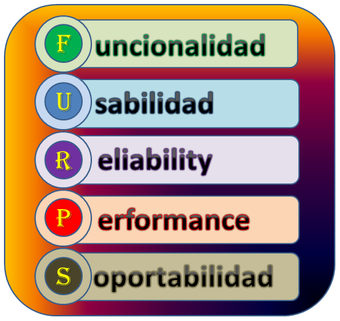

Modelo presentado por Hewlett- Packard (HP) en 1987, donde se desarrolla un conjunto de factores de
calidad software, bajo el acrónimo FURPS.
Estos factores de calidad, junto a sus atributos son usados para establecer métricas de calidad en
las actividades del proceso del desarrollo del software
El modelo FURPS+ establece cinco características como factores de calidad que son los que le dan
nombre:

La funcionalidad: hace referencia a los requerimientos específicos de lo que
debería realizar el sistema, se valora evaluando los siguientes atributos:
Características y capacidades del programa
Generalidades de las funciones
capacidades
Seguridad del sistema
Los requerimientos de usabilidad hace referencia a la facilidad de uso del
producto, mide el esfuerzo que invierte el usuario para utilizar el sistema, se valora evaluando los
siguientes atributos: pueden incluir subcategorías tales como:
Factores humanos.
Estética.
Consistencia.
Documentación.
La confiabilidad agrupa los requerimientos que tiene que ver con la solidez y
robustez de un sistema durante su ejecución. Incluye:
Recuperabilidad.
Precisión.
Predicción.
Performance (rendimiento – Prestación): hace referenciaa la velocidad del sistema
y su eficiencia en utilización de recursos.
Velocidad de procesamiento
Eficiencia
Consumo de recurso.
Rendimiento efectivo total.
Productividad.
Tiempo de respuesta.
Soporte: se relaciona a factores que se dan durante y después de la
implementación del sistema SW.